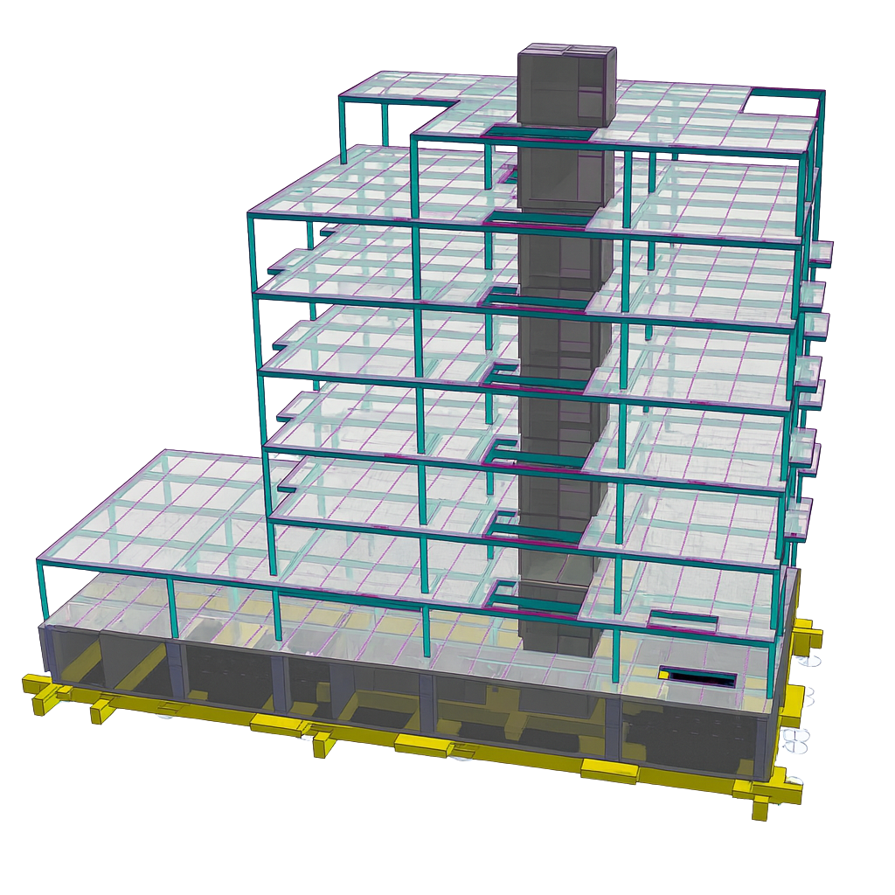

Permitting & Compliance Awareness
H&Z brings deep understanding of structural requirements, permitting, and compliance.
Structural engineering firm serving New York, New Jersey & Connecticut
At H&Z, our priority is to deliver structurally sound, code-compliant solutions with precision, efficiency, and clear communication, ensuring every project meets our clients' goals from concept to completion.
Responsive communication, local code knowledge, practical design, and engineering support that keeps projects moving.
H&Z brings deep understanding of structural requirements, permitting, and compliance.
Clear workflows help move drawings, analysis and construction support forward efficiently.
Clients work with responsive professionals who keep owners, architects and contractors aligned.
Every project tells a story of collaboration, problem-solving and structural expertise. Explore recent work to see how H&Z helps bring architectural visions to life.
Explore Projects
Focused local pages help clients quickly find the right support for renovations, inspections, additions and development work.
Design, inspection and construction support for homeowners, architects, contractors and developers across New York City and nearby markets.
View New York SupportPractical engineering support for renovations, additions, peer review and commercial work throughout priority New Jersey markets.
View New Jersey SupportKnow the project moments when structural input should come in early.
Read ArticleUnderstand the purpose of special inspections and when they matter.
Read ArticlePrepare the information that helps engineering review move faster.
Read ArticleFrom structural assessments to full-scale designs, H&Z turns complexity into clarity and brings safety to the skyline.